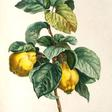
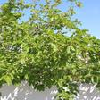
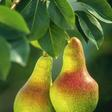
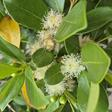
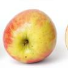
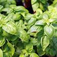
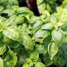
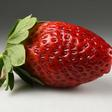

2–9
🌳 Tree Section
Fast-growing nitrogen-fixing tree with edible cotton-like fruit pulp. Excellent shade tree and biomass producer. Pods contain sweet white edible flesh around seeds.

Deciduous fruit tree related to apples and pears. Fragrant golden fruit used for preserves, paste and cooking. Beautiful pink-white blossoms.

Fast-growing deciduous tree producing sweet white-pink fruit. Excellent for biomass - recovers quickly from hard pruning. Also fodder for silkworms.

Fast-growing nitrogen-fixing shrub to 4m. Edible protein-rich peas and excellent biomass for chop-and-drop. Drought tolerant pioneer.

Classic European pear variety also known as Bartlett. Sweet aromatic fruit excellent fresh or canned. Needs cross-pollination. Beautiful white spring blossoms.

Small fruiting tree with sweet yellow fruit. Drought tolerant once established. Can become weedy - harvest all fruit.

Deciduous fruit tree. Seedlings variable - may take 5-10 years to fruit. Good for wildlife and biomass in syntropic systems.

Citrus fruit tree producing year-round in subtropical conditions. Needs regular water and feeding. Frost sensitive when young.

Medium-hot jalapeño pepper. Thick-walled fruits good fresh, pickled or smoked (chipotle). Heavy producer.

Perennial fruiting plant producing golden berries in papery husks. Sweet-tart flavor. Self-seeds readily. Frost sensitive but regrows from roots.

Thai basil variety with distinctive anise-like flavor and purple stems. Essential for Southeast Asian cuisine. Loves heat.

Fragrant Mediterranean shrub with purple flower spikes. Drought tolerant. Attracts bees and beneficial insects. Prune after flowering.

Deep-rooted nutrient accumulator bringing minerals from subsoil. Excellent for chop-and-drop mulching - produces massive biomass. Cut 4-5 times per season.

Classic sweet Genovese-type basil. Essential for pesto and Italian cooking. Pinch flowers to prolong harvest.

Perennial fruiting groundcover producing sweet red berries. Spreads via runners, forming dense mats. Excellent living mulch in syntropic systems, providing ground coverage while producing edible fruit. Prefers well-drained soil with consistent moisture. Multiple harvests per season in subtropical climates.

Scented leaf geranium with rose-like fragrance. Used for aromatics and pest management. Drought tolerant.

Aromatic perennial herb with yellow button flowers. Strong scent repels insects - plant near fruit trees. CAUTION: Toxic if eaten. Attracts beneficial insects.
Tropical tuber with edible leaves. Excellent living mulch groundcover suppressing weeds. Plant slips in warm soil.
Syntropic agriculture mimics natural forest ecosystems by layering plants at different heights. Instead of clearing land for monocultures, we build stacked polycultures where every species has a role — fixing nitrogen, producing biomass, attracting pollinators, or feeding people.